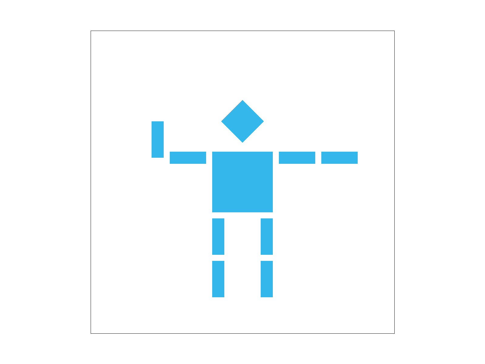
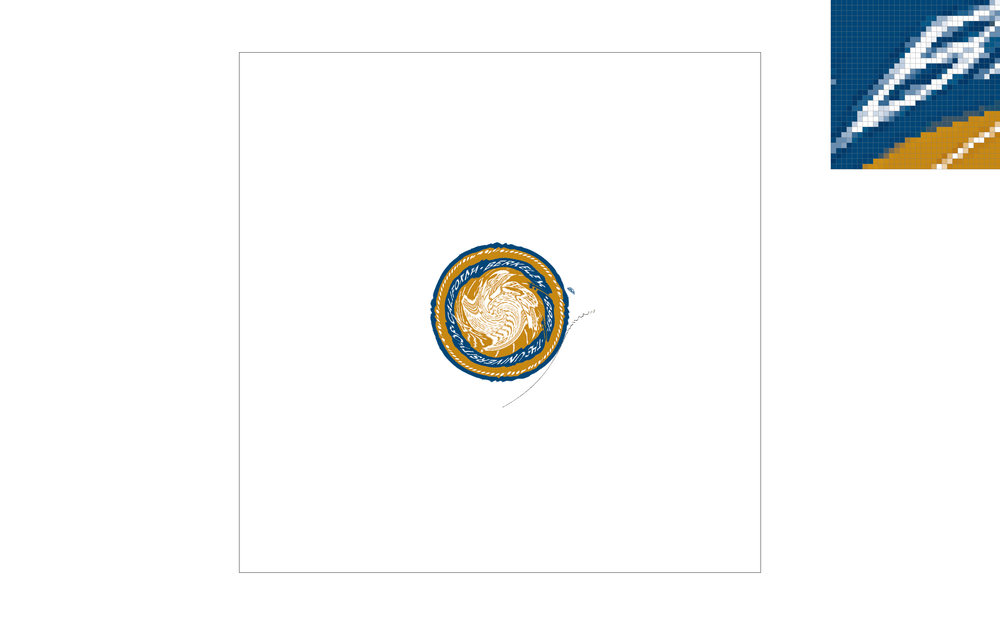
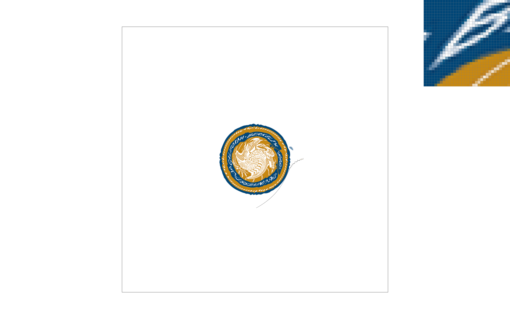
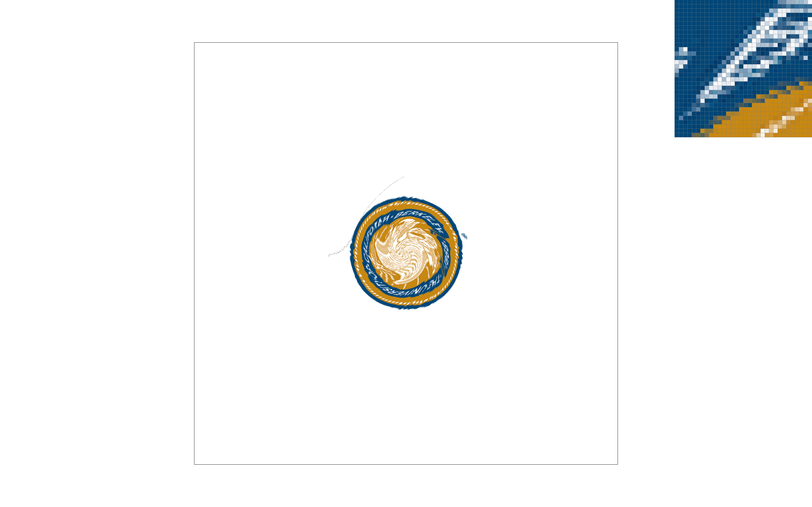
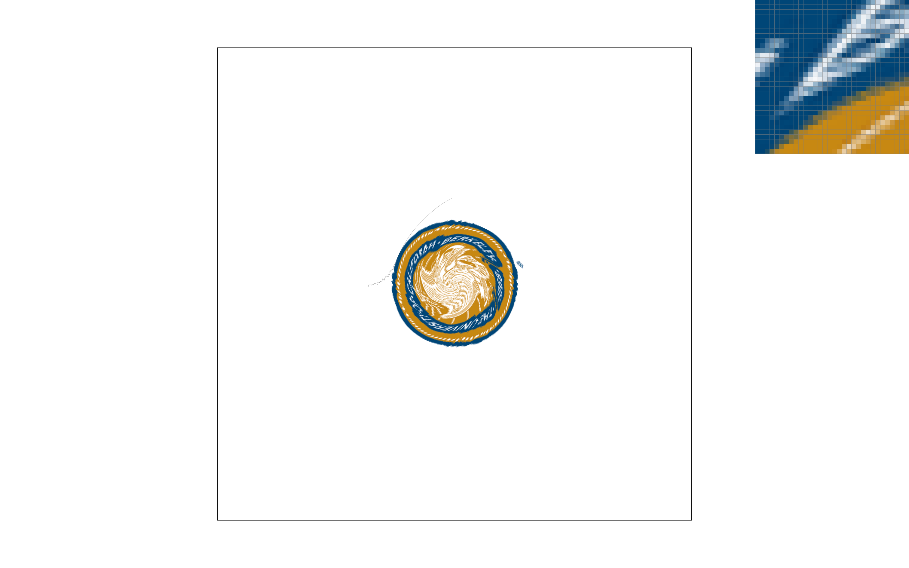
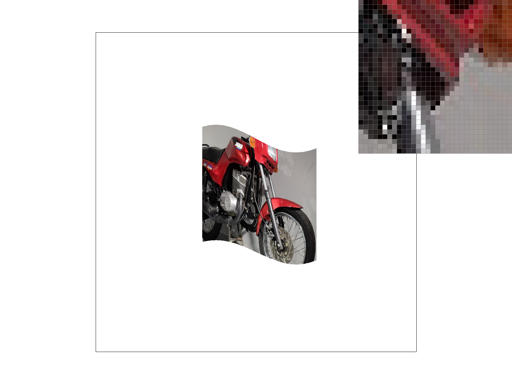
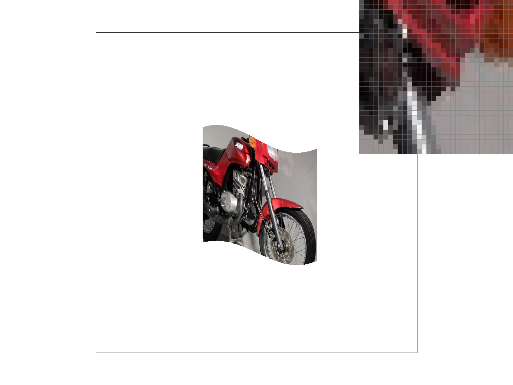
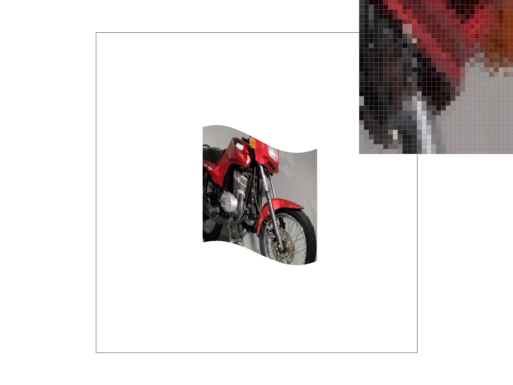

Overview
Give a high-level overview of what you implemented in this homework. Think about what you've built as a whole. Share your thoughts on what interesting things you've learned from completing the homework.
In this homework, I implemented various rasterization techniques, explored pixel sampling methods for texture mapping, and used barycentric coordinates for color interpolation within triangles. One part of this that I found particularly enjoyable was building up from basic shape rasterization to sophisticated texture mapping with antialiasing. There are many ways that sampling and averaging between points to create a smooth effect can enhance the overall viewing experience for computer graphics.
Section I: Rasterization
Part 1: Rasterizing single-color triangles
Walk through how you rasterize triangles in your own words.
First, I calculated the bounding box by determining the minimum and maximum x and y coordinates of the triangle. Then, for each pixel within this bounding box, I check if the pixel’s offset center is inside the triangle using the point-in-triangle test (cross product method. If the pixel's center is determined to be inside the triangle or on its boundary, I call `fill_pixel()` to fill in the pixel with the specified color.
Explain how your algorithm is no worse than one that checks each sample within the bounding box of the triangle.
Because my algorithm iterates through each pixel of the bounding box exactly one time, it will never perform worse than an algorithm that checks each sample within the bounding box of the triangle. Show a png screenshot of basic/test4.svg with the default viewing parameters and with the pixel inspector centered on an interesting part of the scene.
Show a png screenshot of basic/test4.svg with the default viewing parameters and with the pixel inspector centered on an interesting part of the scene.
Part 2: Antialiasing triangles
Walk through your supersampling algorithm and data structures. Why is supersampling useful? What modifications did you make to the rasterization pipeline in the process? Explain how you used supersampling to antialias your triangles.
Supersampling is useful because it performs antialiasing by rendering the image at higher resolutions then
downsampling.
To build the supersampling algorithm, I first created a higher resolution frame buffer to store the color
values of the supersampled pixels. For every pixel in the original frame buffer, I created sample_rate ^ 2 more
pixels fitting into the same space.
hen, I modified the set_sample_rate method to set the sample rate and resizes the sample_buffer to hold all
supersamples.
Finally for rasterizing triangles, my function calculates the bounding box of a triangle and iterates over
each pixel within it. For each pixel, it iterates over each supersample and repeats the same process from task 1
to determine if the sample is inside the triangle. If sample is inside, its color is set in the sample_buffer.
After all elements are rasterized, this function averages the colors of the supersamples for each pixel, converts
them to 8-bit color values, and then stores them in the final rgb_framebuffer_target. This color averaging process
is what antialias the triangle, while achieving higher resolution.
Show png screenshots of basic/test4.svg with the default viewing parameters and sample rates 1, 4, and 16 to compare them side-by-side. Position the pixel inspector over an area that showcases the effect dramatically; for example, a very skinny triangle corner. Explain why these results are observed.
For the very skinny triangle corners, lower sample rates will undersample the color and leave sparse corners. By increasing the sample rate then producing an averaged color, the triangles for higher sample rates will have more accurate yet slightly blurred corners.
Sample Rate 1

Sample Rate 4
Sample Rate 16

Part 3: Transforms
Create an updated version of svg/transforms/robot.svg with cubeman doing something more interesting, like waving or running. Feel free to change his colors or proportions to suit your creativity. Save your svg file as my_robot.svg in your docs/ directory and show a png screenshot of your rendered drawing in your write-up. Explain what you were trying to do with cubeman in words.
Cubeman is blue and waving.
Section II: Sampling
Part 4: Barycentric coordinates
Explain barycentric coordinates in your own words and use an image to aid you in your explanation. One idea is to use a svg file that plots a single triangle with one red, one green, and one blue vertex, which should produce a smoothly blended color triangle.
The barycentric coordinates are a way to describe any point within a triangle as a weighted average of the
triangle's vertices. The color at each pixel is calculated pasted on the areas of subtriangles formed by the point
and the vertices of the main triangle. More specifically, the the interpolation formula color = alpha * c0 + beta
* c1 + gamma * c2 blends the vertex colors based on the point's position within the triangle.
In the image below, the method produces a smoothly blended triangle with one purple, one pink, and one orange
vertex.
Show a png screenshot of svg/basic/test7.svg with default viewing parameters and sample rate 1. If you make any additional images with color gradients, include them.
Part 5: "Pixel sampling" for texture mapping
Explain pixel sampling in your own words and describe how you implemented it to perform texture mapping. Briefly discuss the two different pixel sampling methods, nearest and bilinear.
Pixel sampling is used to map textures and designs onto 3D model. Since a one-to-one mapping of isn’t possible
between the texel and screen area (due to difference in resolution and perspective), pixel sampling is necessary
to decide which texels from a texture image contribute to the color of a specific pixel on the rendered image.
To implement pixel sampling for texture mapping, I first determine which part of the texture corresponds to a
screen pixel. Then, I used a sampling method to transfer the color from the texture.
The first sampling method is Nearest Neighbor Sampling. The algorithm looks at the texture coordinates
corresponding to each pixel and selects the color of the nearest texel. This approach is simple but produces lower
quality images since it doesn’t take into account the colors of surrounding texels.
The second sampling method is Bilinear filtering. Rather than selecting the nearest texel's color, bilinear
filtering calculates color from the weighted average of the four nearest texels to the pixel's corresponding
texture coordinates. The final color is a blend smoothly transitions between texels.
Check out the svg files in the svg/texmap/ directory. Use the pixel inspector to find a good example of where bilinear sampling clearly defeats nearest sampling. Show and compare four png screenshots using nearest sampling at 1 sample per pixel, nearest sampling at 16 samples per pixel, bilinear sampling at 1 sample per pixel, and bilinear sampling at 16 samples per pixel.
Comment on the relative differences. Discuss when there will be a large difference between the two methods and why.
Nearest Sampling; Sample Rate 1
Nearest Sampling; Sample Rate 16
Bilinear Sampling; Sample Rate 1
Bilinear Sampling; Sample Rate 16
Bilinear sampling performs better than nearest sampling because it calculates the output pixel value using linear interpolation between the four nearest pixels, resulting in a smoother transition between colors and textures. On the other hand, nearest neighbor sampling only selects the color of the closest pixel. This can lead to abrupt changes in color and result in a more pixelated image, especially when there is extreme change in angle or perspective like the examples above.
Part 6: "Level sampling" with mipmaps for texture mapping
Explain level sampling in your own words and describe how you implemented it for texture mapping.
Level sampling is a texture mapping method that selects the appropriate amount of detail based on the distance of
the surface from the viewer
To implement this, I first generate progressively downsampeld mipmaps from the original high resolution
texture. During rendering, I calculate level of detail based on the distance of the textured object from the
camera by calculating the ratio of texture pixels (texels) to screen pixels and selecting the mipmap level that
most closely matches this ratio.
You can now adjust your sampling technique by selecting pixel sampling, level sampling, or the number of samples per pixel. Describe the tradeoffs between speed, memory usage, and antialiasing power between the three various techniques.
1. Nearest Pixel Sampling
Fast speed since you only need to select the nearest pixel
Low memory usage
Poor antialiasing ability
2. Mipmap:
Moderate speed since method needs to select the appropriate mipmap level
High memory usage since we need to store multiple versions of the texture at different resolutions.
Reduces aliasing and provides smoother transitions
3. Supersampling:
Slowest speed since method needs sample multiple times per pixel and then averaging the results
Highest memory usage since it needs to render the image at several times the original resolution before
downsampling
Very good antialiasing results since averaging multiple samples per edges smooths edges and textures.
Using a png file you find yourself, show us four versions of the image, using the combinations of L_ZERO and P_NEAREST, L_ZERO and P_LINEAR, L_NEAREST and P_NEAREST, as well as L_NEAREST and P_LINEAR.
L_ZERO and P_NEAREST
L_ZERO and P_LINEAR
L_NEAREST and P_NEAREST
L_NEAREST and P_LINEAR
